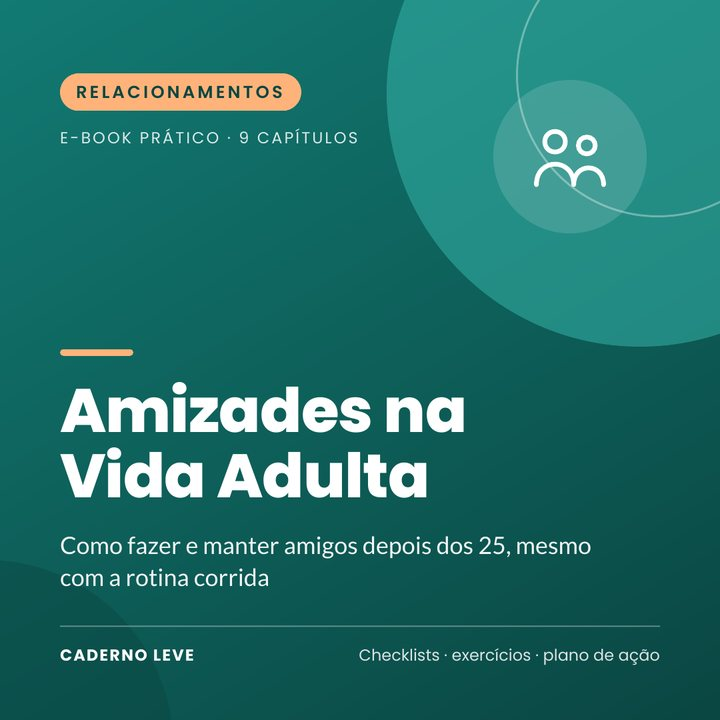

Amizades na Vida Adulta: Adeus, Solidão
Como fazer e manter amigos depois dos 25, mesmo com rotina corrida: reativar laços, onde conhecer gente, convites, rituais e plano de 30 dias.
Se precisasse desabafar numa sexta à noite, você saberia para quem ligar? Fazer amigos na vida adulta é diferente, e dá para aprender.
O Amizades na Vida Adulta é um e-book prático, em linguagem simples, para quem sente que os amigos foram sumindo com a rotina e quer criar laços de verdade de novo.
Você entende por que é mais difícil fazer amigos depois dos 25, mapeia as relações que já tem, aprende a reativar amizades antigas, descobre onde encontrar pessoas novas, como transformar conhecidos em amigos e como manter as amizades mesmo com a agenda cheia.
O que você vai conquistar
- Entender por que a vida adulta dificulta as amizades
- Mapear e reativar amizades adormecidas
- Escolher atividades que aumentam as chances de fazer amigos
- Transformar conhecidos em amigos com convites concretos
- Criar rituais de amizade que cabem na rotina
- Reconhecer quando a solidão pede ajuda profissional
O que tem dentro
- Capítulo 1Por que é mais difícil depois dos 25
- Capítulo 2Solidão: o que é e por que importa
- Capítulo 3O mapa das suas relações
- Capítulo 4Onde encontrar gente nova
- Capítulo 5De conhecido a amigo
- Capítulo 6Amizade com a agenda cheia
- Capítulo 7Aprofundando os laços
- Capítulo 8Quando a amizade dói
- Capítulo 9Quando a solidão pesa demais
- ExtraResumo e plano de ação para colocar em prática
- ExtraFolha de trabalho e checklist para imprimir
Para quem é
- Quem mudou de cidade, de emprego ou de fase de vida
- Quem sente que os amigos foram sumindo
- Quem quer amizades mais profundas
Para quem não é
- Não substitui psicoterapia nem tratamento para depressão ou ansiedade
- Não promete amigos da noite para o dia: amizade leva tempo
Bônus: Folha de trabalho — mapa de relações, registro de iniciativas, rituais de amizade e checklist semanal, além de um plano de 30 dias.
Aviso importante
Este e-book tem caráter educativo e de autocuidado. Ele não faz diagnóstico, não é tratamento e não substitui psicoterapia nem acompanhamento médico. Se o sofrimento estiver intenso, durando muito tempo ou atrapalhando sua vida, procure um(a) psicólogo(a), um médico ou a Unidade Básica de Saúde (UBS) mais próxima.
Se você precisar conversar agora, o CVV atende de graça, 24h, no 188 ou em cvv.org.br. Em emergência, ligue SAMU 192.